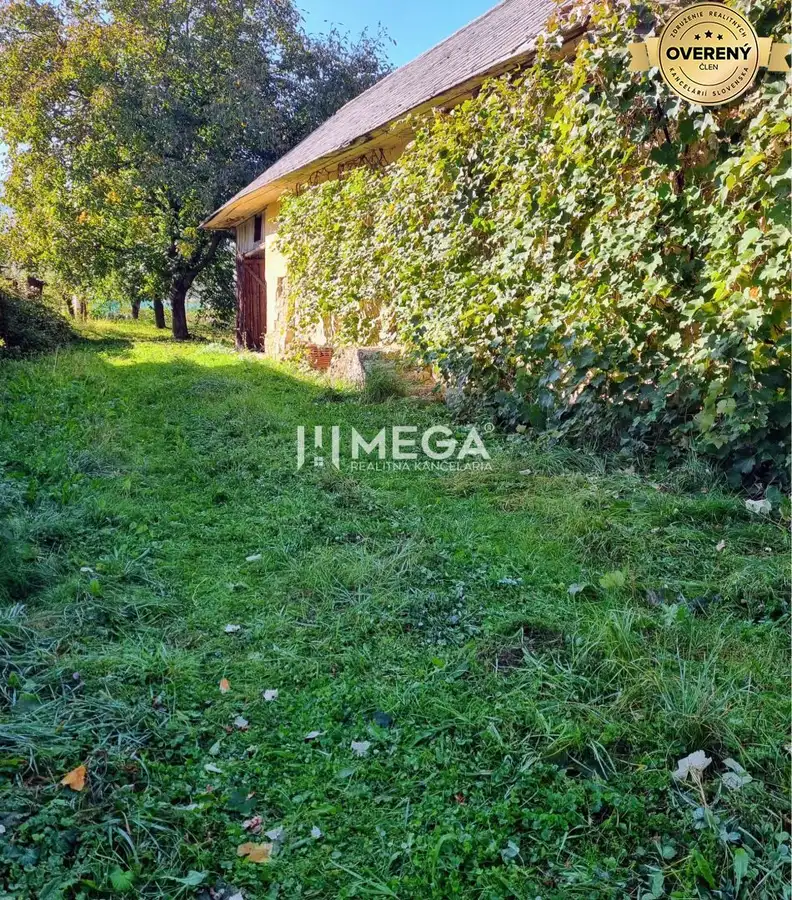
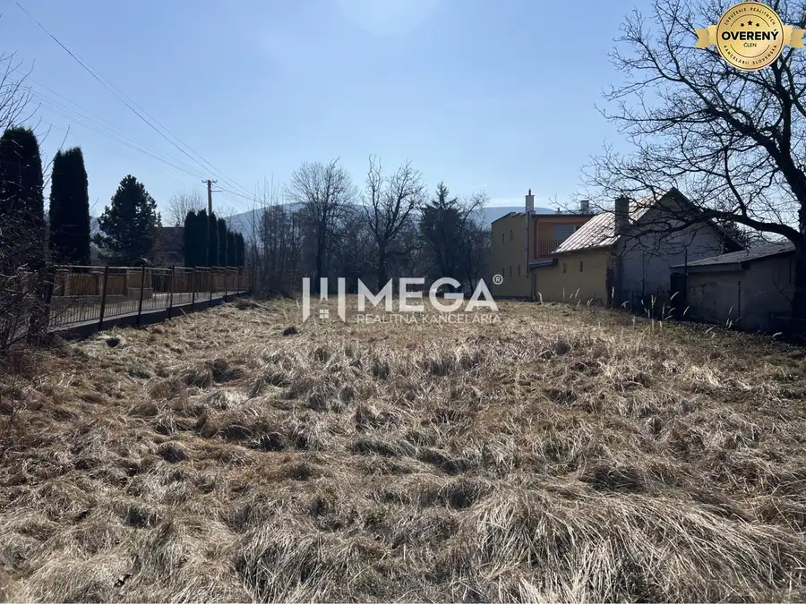
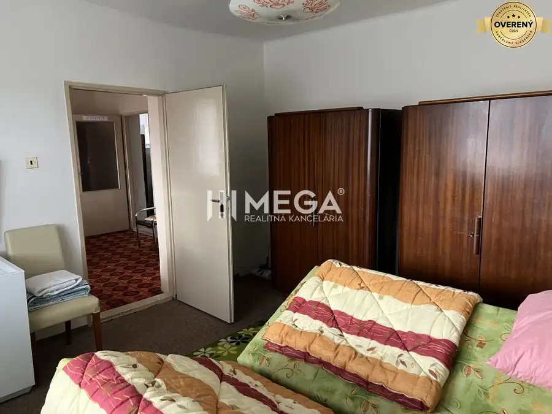

SKVELÁ CENA - výnimočný rodinný dom, Kamenica nad Cirochou
Kamenica nad Cirochou
- Dispozícia7-izbový
- Plocha390 m²
- Stavčiastočne prerobený
- Vlastníctvoosobné
O nehnuteľnosti
JEDINEČNÁ PONUKA, VÝRAZNÁ ZĽAVA .
Od prvého momentu v tomto dome sa budete cítiť ako doma. Úsmev, milá atmosféra, uvoľnená nálada. Prevediem Vás nehnuteľnosťou, ktorá vyžaruje pokoj a teplo domova.
EXKLUZÍVNE Mega realitná kancelária ponúka na predaj 7- izbový dom v pokojnej lokalite Kamenica nad Cirochou, okres Humenné.
DEDINSKÝ POKOJ NA DOSAH MESTA
Kamenica nad Cirochou je príjemnou obcou, ktorá prináša dokonalý dedinský pokoj , Do tejto malebnej lokality je umiestnený
rodinný dom, ktorý ponúkam. Humenné či Snina sú na dosah ruky.
Stredisková obec ponúka deťom aj rodičom perfektnú vybavenosť, škola, škôlka, pekáreň, obchody, záhradné a stavebné centrum, zdravotné stredisko, lekáreň .K tomuto všetkému si prirátaj čarovné miesto v lone Vihorlatských vrchov.
Skvelé je, že tento výnimočný dom stojí mimo hlavnej cesty, v tichej uličke .
Kuchynská linka na mieru je prepojená s útulnou, slnečnou obývačkou. Priestranná spálňa orientovaná na západ poskytne vám dostatok súkromia. Deti sa zas môžu vyblázniť vo svojich komfortných 3 detských izbách. Ďalšie 3 priestranné izby čakajú na vaše nápady.
Dom vám ešte poskytne žehliareň, špajzu, dve kúpeľne . Páni pre vás - garáž i technická miestnosť.
Čiastočne podpivničený dom ťa prekvapí : kotolňa, sklad, letná kuchyňa. Na prvom ustupujúcom podlaží je vstupná hala a toaleta.
S vašimi priateľmi si budete vychutnávať grilovačku v peknej záhrade s altánkom a udiarničkou. Skvelé aj pre oslavy a párty.
Máte psíka, voliera pre vášho miláčika je hotová.
Pokiaľ sa ti zdá, že je informácií je primálo: neváhaj - dohodni si obhliadku
Vidíme sa?
Tento dom má niečo, čo mnohým domovom chýba - POHODA pre celú rodinu. Vedeli ste o tom, že viacgeneračné bývanie predlžuje život.....
Technické informácie:
- obvodové múry tvárnice, tehla
-nová strecha valbová, pozinkovaný plech, nový krov
- zrekonštruvaná fasáda
- okná drevené, eurookná s izolačným dvojsklom
- vykurovanie: radiátory, plynový kotol
- garažová brána Hörmann
- priestranná terasa a lógia
- odvodňovacia drenáž vykonaná zo všetkých štyroch strán domu
- nová rekonštrukcia r. 2021 - podkrovné bývanie - stierky, zateplenie, podlaha, elektroinštalácia
- na pozemku sa nenarobíš, ale si ho dokonale užiješ
Orientácia východ, západ, poloha domu mimo verejnej komunikácie.
V cene nehnuteľností je zahrnutý kompletný právny servis, vypracovanie zmluvy, poplatky spojené s prevodom vlastníckych práv. Poradíme Vám s financovaním a poistením nehnuteľnosti.
V prípade záujmu o obhliadku alebo ďalšie informácie, neváhajte nás kontaktovať!
Kontakt: Ing. Peter Sakáč
Mob.:
Email:
Nezmeškajte túto jedinečnú ponuku!
Parametre
| Dátum zverejnenia | 30. 9. 2026 |
|---|---|
| Garáž | áno |
| Internet | iné |
| Lódžia | áno |
| Orientácia | východná |
| Pivnica | áno |
| Postavené z | Zmiešané |
| Počet izieb | 7 |
| Rozloha pozemku | 849 m² |
| Stav | čiastočne prerobený |
| Terasa | áno |
| Terén | rovina |
| Vlastníctvo | osobné |
| Vykurovanie | vlastné |
| Zariadenie | zariadený |
| Zastavaná plocha | 141 m² |
| Úžitková plocha | 390 m² |
Kde to je
Mohlo by Vás zaujímať

PozemokNové5 29 700 €Stavebný pozemok so starým domom, Belá nad Cirochou Belá nad Cirochou 690 m² Mega realitná kancelária ponúka na predaj stavebný pozemok s chalúpkou v obci Belá nad Cirochou. Lokalita Malebná dedina sa rozpriestiera na…
PozemokNové6 28 000 €Výrazne znížená cena za stavebný pozemok na predaj, Modrá nad Cirocho Modra nad Cirochou 1000 m² MEGA Realitná kancelária ponúka VO VÝHRADNOM ZASTÚPENÍ stavebný pozemok v obci Modrá nad Cirochou. Popis: Nachádza sa v malebnom prostredí obce Modrá…
Rodinné domyNové10 89 900 €Znížena cena domu na Jesenského ulici v Snine Snina 2-izbový81 m² DOM NA PREDAJ V BLÍZKOSTI KRÁSNEJ PRÍRODY V MESTE SNINA Mega realitná kancelária ponúka na predaj udržiavaný 2- izbový rodinný dom nachádzajúci sa v…